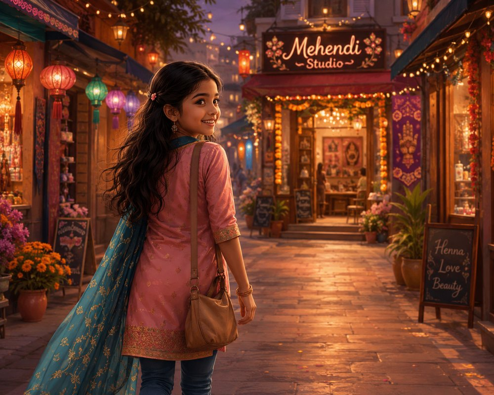
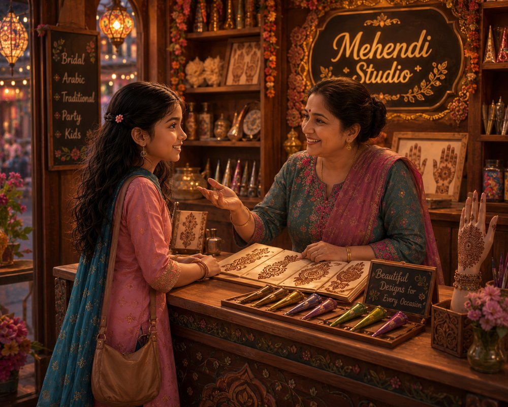
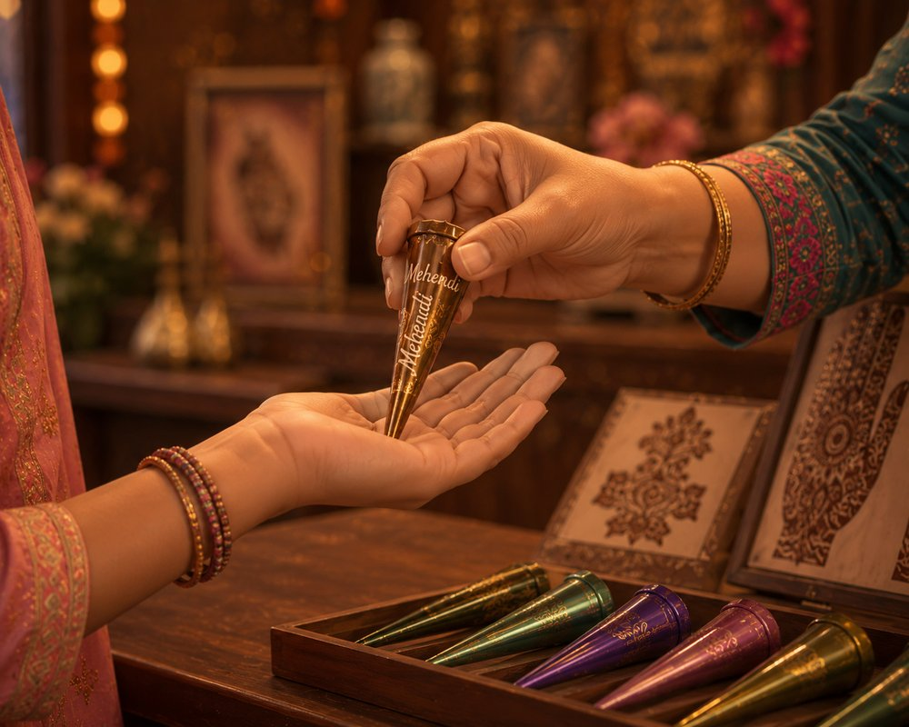

It was festival morning, and Jiyana had heard about the famous mehendi shop in town — today, she was finally going to visit.

I want to learn to make mehendi like you!
Then let's begin — pick your first design, and show me what you've got.

Grab your cone, Jiyana — your mehendi journey starts now!